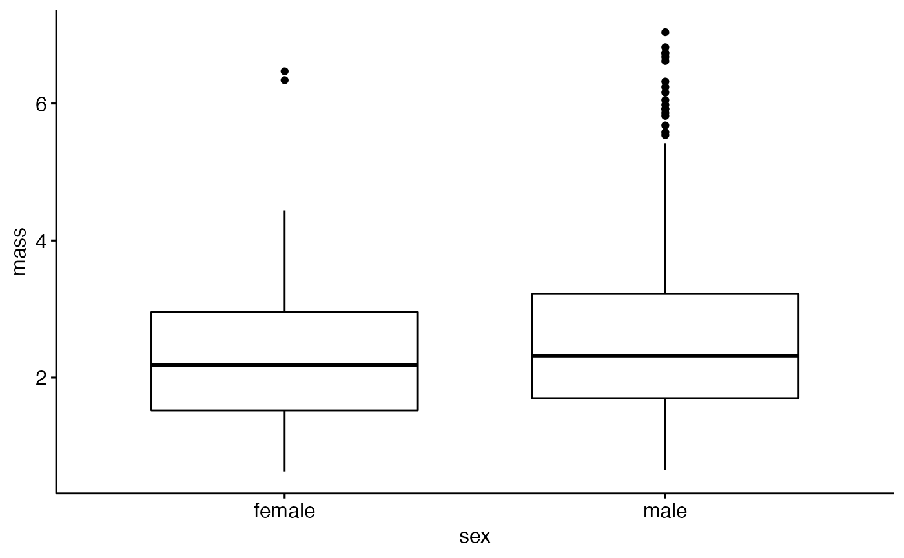

frogarms.RdMorphology information on arm girth and overall body size was collected by Buzatto et el as part of a study of sexual selection in the Australian Quacking Frogs.
frogarms
A data frame of frog morophology data.
Row of data
frog Id
Sex of each frog (male or female)
mass of each frog in grams
snout-vent length in mm
forearm girth (?) in mm
arm girth in mm
https://figshare.com/articles/Data_Paper_Data_Paper/3554424
Buzatto BA, Roberts JD, Simmons LW. 2015. Sperm competition and the evolution of precopulatory weapons: Increasing male density promotes sperm competition and reduces selection on arm strength in a chorusing frog. Evolution 69: 2613-2624. https://doi.org/10.1111/evo.12766
Buzatto BA, Roberts JD, Simmons LW. 2015. Data from: Sperm competition and the evolution of precopulatory weapons: Increasing male density promotes sperm competition and reduces selection on arm strength in a chorusing frog. Dryad Digital Repository. https://doi.org/10.5061/dryad.cr2n4
## Load packages library(ggplot2) library(ggpubr) ## Plot data ### boxplot ggboxplot(data = frogarms, y = "mass", x = "sex")### Scatter plot (Figure 1 a of Buzatto et al 2015) ggscatter(data = frogarms, y = "arm", x = "sv.length", color = "sex", shape = "sex", ylab = "Arm girth (mm)", xlab = "Snout-vent length (mm)")#> Warning: Removed 7 rows containing missing values (geom_point).